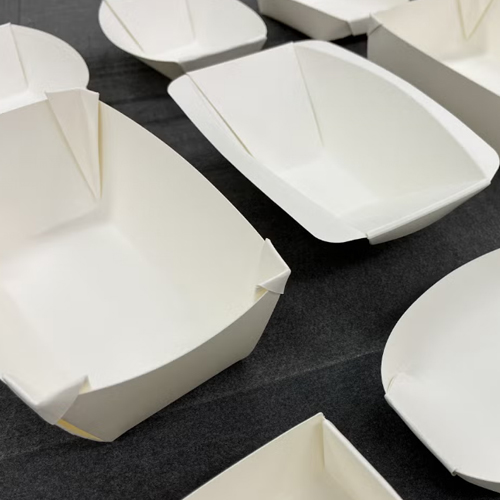
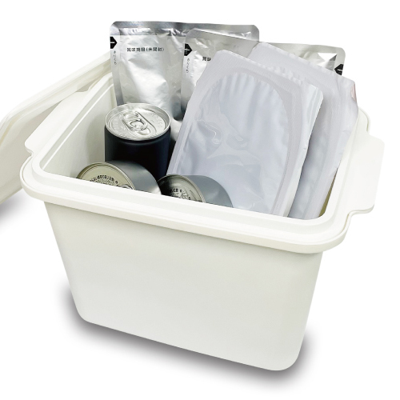
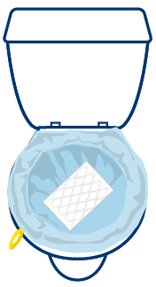

社員の安全確保と事業継続を支えるために。 災害発生時の「食」「衛生」「備え」を見直し、 企業の防災力を高める実践的なソリューションをご提案します。
災害時の避難生活では、食器や容器の不足が大きな課題となります。 身近な紙から簡単に作れる折り紙食器は、水の使用を抑えながら衛生的な 食事環境をサポート。いざという時に役立つ実践的な防災技術をご紹介します。

長期保存と美味しさを両立した防災備蓄食をご提案します。 非常時の栄養補給だけでなく、従業員の安心感や健康維持にも貢献。 企業の備蓄対策をより実効性の高いものへと進化させます。
停電やライフライン停止時でも、温かい食事を提供できる加熱ソリューション。 避難生活や事業所待機時のストレス軽減につながり、働く人々の安心と活力を 支える新しい防災対策です。

災害時に重要となる衛生管理をサポート。 感染症対策や身体の清潔保持を支援する衛生用品により、 避難生活の快適性と安全性を向上。企業の防災備蓄を トータルに支えます。
